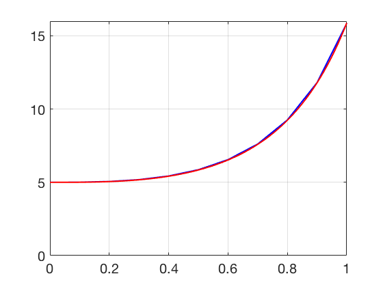

Additional Examples 6.2
1 Calculate the Trapezoid Method approximation on the interval \([0, 1]\) to the initial value problem \(y' = ty^2, y(0) = -1\) for step size \(h=1/4.\) Find the error at \(t=1\) by comparing with the exact solution \(y(t)=-2/(t^2+2)\).

The Trapezoid Method applied to the IVP \(y' = ty^2, y(0) = -1\) has form
\begin{eqnarray*}
w_0&=& -1\\
w_{i+1} &=& w_i+\frac{h}{2}[t_iw_i^2+(t_i+h)(w_i+ht_iw_i^2)^2 ]
\end{eqnarray*}
Using \(h=1/4\) the formula yields
\begin{eqnarray*}
w_0 &=& -1\\
w_1 &=& -0.9688\\
w_2 &=& -0.8877\\
w_3 &=& -0.7800\\
w_4 &=& -0.6675
\end{eqnarray*}
The error at \(t = 1\) is \(|w_4 - y(1)| \approx 0.00088.\)
2 Plot the Trapezoid Method approximation to the solution of the initial value problem
\( \left\{
\begin{array}{l}
y' = 3t^2y+4t^2\\
y(0)=5.
\end{array} \right. \)
on the interval \([0,1]\) with step size \(h=0.1\), along with the exact solution \(y(t) = -\frac{4}{3} + \frac{19}{3}e^{t^3}\).
Program 6.1 can be adapted to carry out the Trapezoid Method for this equation. The eulerstep function should be replaced with a trapstep function. The ydot function should return
3*t**2*y+4*t**2 . The red curve is the exact solution. Slightly above it lies the approximate solution from the Trapezoid Method with step size
\(h=0.1.\)
